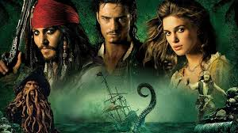

კარიბის ზღვის მეკობრეები
კარიბის ზღვის მეკობრეები (ინგლ. Pirates of the Caribbean) — ფენტეზის და სათავგადასავლო კომედიური ჟანრის ფილმების სერია, რომლის პროდიუსერია ჯერი ბრუკჰაიმერი. იგი ეფუძნება უოლტ დისნეის ამავე სახელწოდების ატრაქციონებს. ფილმების რეჟისორები არიან გორ ვერბინსკი (1–3), რობ მარშალი (4), ხოლო იოახიმ რონინგი და ესპენ სანდბერგი იქნებიან სერიის მეხუთე ფილმის რეჟისორები. თავის მხრივ, სცენარის ავტორები არიან ტერი როსიო და ტედ ელიოტი (1–4), სტიუარტ ბიტლი (ამბავი, 1) და ჯეი უოლპერტი (ამბავი, 1), ხოლო მეხუთე ფილმის სცენარის ავტორი იქნება ჯენ ნეითენსონი.

ფილმში ძირითადად აღწერილია კაპიტან ჯეკ ბეღურას (ჯონი დეპი) თავგადასავლები. მათი მოქმედება მიმდინარეობს გამოგონილ ისტორიულ წარსულში, სამყაროში, რომელშიც ალტერნატიული რეალობა ბატონობს, ძირითად ანტაგონისტად წარმოდგენილია ბრიტანეთის იმპერია და აღმოსავლეთ ინდოეთის კომპანია, ხოლო მეკობრეები მმართველი ძალებისგან თავისუფლების სიმბოლოს წარმოადგენენ.
ფილმების სერია დაიწყო 2003 წელს პირველი ფილმის, „შავი მარგალიტის წყევლის“ გამოსვლით. წარმატების შემდეგ Walt Disney Pictures-ისგან ცნობილი გახდა, რომ გამოვიდოდა გაგრძელება ტრილოგიის სახით. ფრენჩაიზის მეორე ფილმი, „მკვდრის სკივრი“ გამოვიდა 3 წლის შემდეგ, 2006 წელს. იგი წარმატებული აღმოჩნდა და პრემიერის დღეს ფინანსური რეკორდები მოხსნა. მესამე ფილმი, „მსოფლიოს დასასრული“, 2007 წელს გამოვიდა. მეოთხე, „უცნაურ ნაპირებზე“ გამოვიდა 2011 წლის 20 მაისს, სტანდარტულ 2D, ციფრულ 3-D და IMAX 3D ფორმატებში.
მან 1 მილიარდზე მეტი აშშ დოლარის ოდენობის შემოსავალი შეაგროვა და მსოფლიო კინოს ისტორიაში იქცა რიგით მერვე ფილმად ასეთი წარმატებით. დღეისთვის ფილმის ფრენჩაიზმა მსოფლიო მასშტაბით 3.72 მილიარდ დოლარზე მეტი შეაგროვა. იგი არის ყველა დროის ფილმების სერიაში რიგით მეექვსე შემოსავლიანი პროექტი. იგი აგრეთვე იყო პირველი კინო-ფრენჩაიზი, რომელშიც ერთზე მეტმა ფილმმა 1 მილიარდ დოლარზე მეტი შეაგროვა. მეხუთე ფილმი, „მკვდრები ზღაპრებს არ ჰყვებიან“ გამოვიდა 2017 წლის 17 ივლისს.